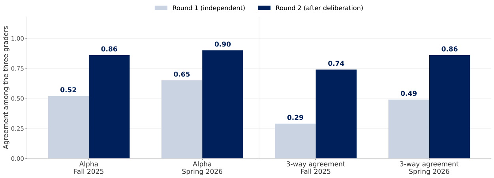
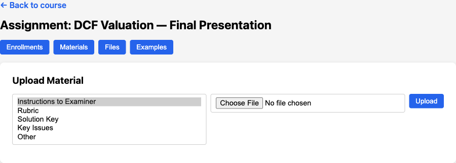

Rice Business 2026
Writing
Presentations
Feedback is not a knowledge problem. It is a minutes problem — and minutes are exactly what these tools sell.
Coach the delivery
Score against a rubric
Probe the understanding
Most products do exactly one of these. Confusing them is how a department buys a filler-word counter and wonders why it never says anything about the argument.
The tools
What you get
Adoption is real: UW-Seattle funds Yoodli for every student out of the tech fee. Cheap, useful, and orthogonal to what we grade.
16,000
Turnitin customers
2,600+
Universities on Feedback Studio
LTI 1.3
Grades flow into Canvas
The incumbents
The challengers
Clarity does not score the essay. It records the writing of it — version-history playback, pasted-text flags, active writing time.
When the product is cheap to fake, the process becomes the evidence. That is a different assessment design, not a better detector.
TIME named Clarity one of its Best Inventions of 2025. Detection-first products are quietly repositioning as process-visibility products.
90
Presentations graded
$0.06
Per evaluation
1–3 min
Turnaround per deck
How it works
The pilot
Voice exam
Identity check, then 8–10 minutes on the student’s own project and 8–10 on a case
Three graders
Claude, Gemini and GPT-5 score the transcript on five 0–4 dimensions, citing verbatim evidence
Chair decides
They read each other, revise, and Claude synthesizes the final 0–20 grade and feedback
Two cohorts of an AI/ML product management course: 36 students in Fall 2025, 37 in Spring 2026. Published as arXiv 2603.18221.

NYU Stern’s Viva: agreement among the three grading models, before and after they read each other’s assessments. Krippendorff’s alpha on the left, share of items with all three in exact agreement on the right.
| AI oral exam | Human oral exam | |
|---|---|---|
| Grading | $0.29–0.96 per exam | — |
| All-in, 25–30 minutes | ~$3.40 per exam | ~$21 per exam |
| Scheduling | Student picks a slot at 11pm | Two graders in a room |
| Consistency | Same examiner for all 37 | Drifts across a long day |
The interesting number is not the cost. It is that every student got a live oral exam at all.
Worked
Hurt
Preferred
Their biggest fixable complaint was question stacking — the agent asking two things at once. It fell from 31% of turns to 11% once the prompt forbade it. We hit the same bug; the fix is in our prompts too.
The pressure
The shape
The bar is low
Rubrics carry it
Watch the student
Sources: GradeAgentOps (AI, 2026); “Rubric Is All You Need” (ICER 2025); “Generative AI offers more, but students revise less” (IJETHE, 2026).
They all know how to grade. Not one of them knows your course — your rubric, your solution key, the three mistakes you have watched students make every year since 2014.
That is the part no vendor ships, and the only part that makes the feedback yours.
Upload
Slides as PDF, from a magic link — no account
Present
Talks through the deck to a silent voice agent
Wait 30s
Questions are rewritten around what was actually said
Answer
Three questions and one follow-up, out loud
Read
Scores, justifications and written feedback
FastAPI, Postgres, ElevenLabs for voice. kerryback-biai/presentation-examiner.
Intake
Analyst
Examiner
Council
Every one of these four reads whatever you uploaded for the assignment. That is where your rubric gets its leverage.
From the analyst’s system prompt
Test understanding, not just recall. Probe areas where the slides are vague or superficial.
Be PITHY: one sentence each, direct and to the point.
SINGLE-PART ONLY: each question must ask exactly ONE thing. NEVER use “and” or “also” to combine two questions.
NEVER claim there are errors in the student’s numbers. You may ask how a number was derived, but NEVER assert it is wrong.
Every rule there is scar tissue. The last one exists because a model told a student their terminal value was inconsistent when it was 3% growth applied correctly.
The listener
The examiner
Two separate ElevenLabs sessions, because one agent cannot be both silent and inquisitive. Hanging up the first call is the event that triggers everything downstream.
Between the two calls, Claude rewrites the three questions using the slides and the transcript of what the student just said.
Question bank
Rewritten live
Round 1
GPT-5.4, Claude Sonnet 4.6 and Gemini 3.0 grade the same content against the same rubric, in parallel, independently
Round 2
Each sees the others’ scores and justifications, and may move — “consensus while maintaining rigorous standards”
Chair
Opus 4.6 accepts agreement, resolves disagreement, and explains why
Three parts get this treatment separately: the slides, the delivery, and the Q&A. Ten model calls per part.
pe.grades — one row per model, per round, per part
session_id | part | model_name | grading_round | overall_score | category_scores | assessment
A student who challenges a grade can be shown three independent reads, what changed in deliberation, and why. Try producing that from a rubric printout.
Assignment prompt
Grading instructions
Materials
Examples

The type is not cosmetic. rubric is fetched by the grader; the others are pooled into context that the question writer and the graders both see.
DEFAULT_RUBRIC_SLIDES
Evaluate slide quality on a 0-4 scale:
Overall: average of three categories.
Return JSON: {“scores”: {…}, “overall_score”: X.X, “overall_assessment”: “…”}
Generic on purpose, and generic in effect. It is the floor, not a recommendation.
The grading prompt, assembled per part
You are an expert grader evaluating student work.
GRADING RUBRIC: → your uploaded rubric, verbatim
CONTENT TO EVALUATE: → the assignment prompt → your grading instructions → your solution key and key issues → the student’s slides and transcripts
Score each category, justify each score in 2–3 sentences, then write the overall assessment.
No parsing, no schema, no rubric builder. Your document is dropped in as text — which is exactly why its wording does all the work.
| Vague | Machine-readable |
|---|---|
| Demonstrates strong analysis | 4: states the WACC build-up and defends each input; 2: reports a WACC with no derivation |
| Good use of evidence | Cites a number from the case for every claim about margins |
| Professional slides | No slide carries more than two exhibits or more than 40 words |
| Understands the material | Can say what breaks if terminal growth exceeds WACC |
The rule of thumb: if two of your TAs would score it differently, so will three models. Specificity is the whole game.
How it works today
rubricWhat to do about it
Worth knowing before you upload a slide rubric and wonder why the Q&A is being scored on visual design.
Generate
The Examples tab writes five synthetic submissions — excellent, good, average, below average, poor — with transcripts and Q&A
Grade them
The full council runs on all five, against your rubric
Check the spread
Scores should fall in order, and the gaps should look like your gaps
The same five levels the batch runner uses on the command line, wired into the instructor dashboard as an Examples tab.
Average score by intended quality level
excellent → 3.61 / 4.0 (n=8)
good → 3.02 / 4.0 (n=9)
mediocre → 2.14 / 4.0 (n=7)
poor → 1.38 / 4.0 (n=6)
Illustrative shape, not our numbers — this is what the batch runner prints after grading a cohort of synthetic students against your rubric.
A rubric that scores the excellent deck and the mediocre deck within 0.3 of each other is not a rubric yet — it is a vocabulary.
Audit a sample
Publish the rubric
Own the grade
The 20-minute version
What the app buys
Start with the rubric. It is the asset — everything else here is plumbing around it.
Buy
Borrow
Build
Every student gets a live oral exam and two pages of specific feedback — or none of them do. That is the actual choice on the table.